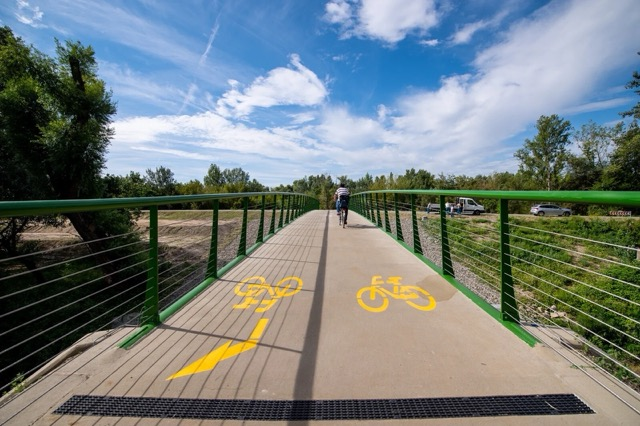

Győr városnézés
- Hossz: 10 km
- Szintemelkedés: alacsony
- Úttípus: kerékpárút
- Nehézség: könnyű
Győr - Ravazd
- Hossz: 27 km
- Szintemelkedés: magas
- Úttípus: kerékpárút
- Nehézség: nehéz
Győr - Lipót
- Hossz: 28 km
- Szintemelkedés: közepes
- Úttípus: kerékpárút
- Nehézség: nehéz
Győr - Dunaszeg
- Hossz: 14 km
- Szintemelkedés: alacsony
- Úttípus: kerékpárút
- Nehézség: könnyű
Győr - Öttevény
- Hossz: 16 km
- Szintemelkedés: alacsony
- Úttípus: kerékpárút
- Nehézség: könnyű
Győr - Magyaróvár
- Hossz: 44 km
- Szintemelkedés: közepes
- Úttípus: nagyrészt kerékpárút
- Nehézség: nehéz
Győr - Nyalka
- Hossz: 23 km
- Szintemelkedés: magas
- Úttípus: országút
- Nehézség: közepes
Győr - Ács
- Hossz: 33 km
- Szintemelkedés: alacsony
- Úttípus: nagyrészt kerékpárút
- Nehézség: nehéz
Győr - Pér
- Hossz: 21 km
- Szintemelkedés: közepes
- Úttípus: országút
- Nehézség: közepes
Győr - Tényő
- Hossz: 20 km
- Szintemelkedés: magas
- Úttípus: országút
- Nehézség: nehéz